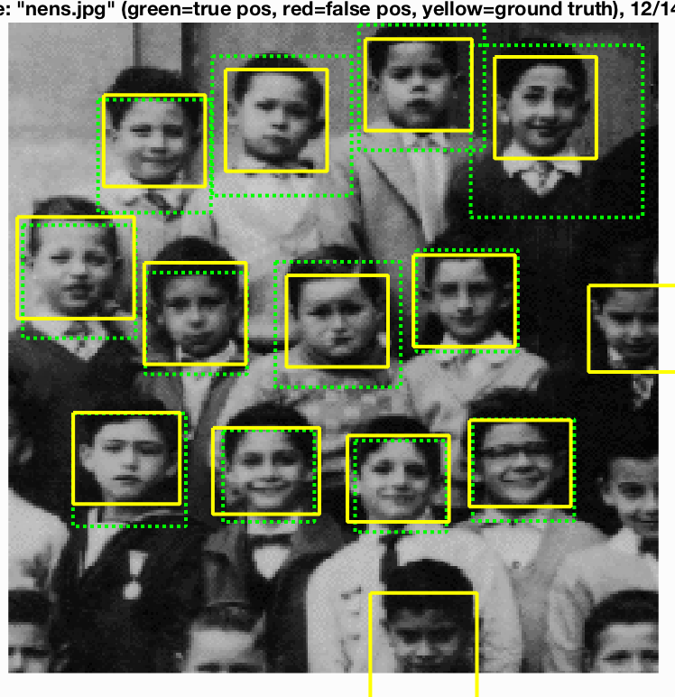
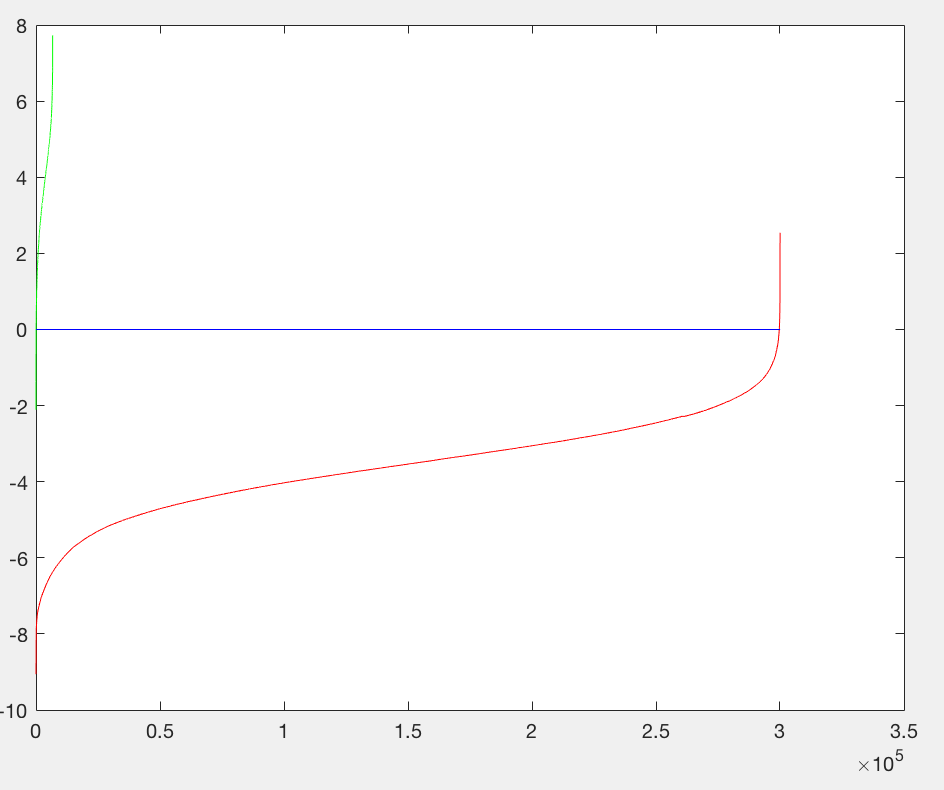

Comp 5421 / Project 2 / Face Detection with a Sliding Window

In this project we implemented a program to do the face-detection.
The face detection mainly contains the following steps:
- Extract Histogram of Oriented Gradient(HOG) features from positive samples.
- Extract Histogram of Oriented Gradient(HOG) features from random negative samples.
- Train a Linear SVM classifer from both positive and negative samples.
- Detact test dataset by sliding window and adjusting the scale of window(multiscale), determing whether each window contains a face or not.
- Generate a bounding box with confidence threshold.
- Compute ROC, precision-recall curve and average precision.
The positive training database of 6,713 cropped 36x36 faces from Caltech Web Faces project, and negative training database come from Wu et al. and the SUN scene database.
Determine random negative samples
For each negative images, we randomly generate two integers, indicating the position of the 36x36 images. And the total number of random negative samples is 300,000.
Train Linear SVM
We use Linear SVM(vl_svmtrain) with lambda as 0.0001 to get a linear classifier. The visualization of the trained classifier is shown below
Multi-scaling and step size
We change the scale of window by zooming the original test picture, downsampled to 90% recursively, and not stop downsampling until the picture has size less then 36x36. The step size we decided is 4, in compromising the efficiency and accuracy.
Results in a table
|  |
HOG Visualization
Precision Recall curve for the starter code.
Viola Jones
Visualizing SVM
Example of detection on the test set from the starter code.